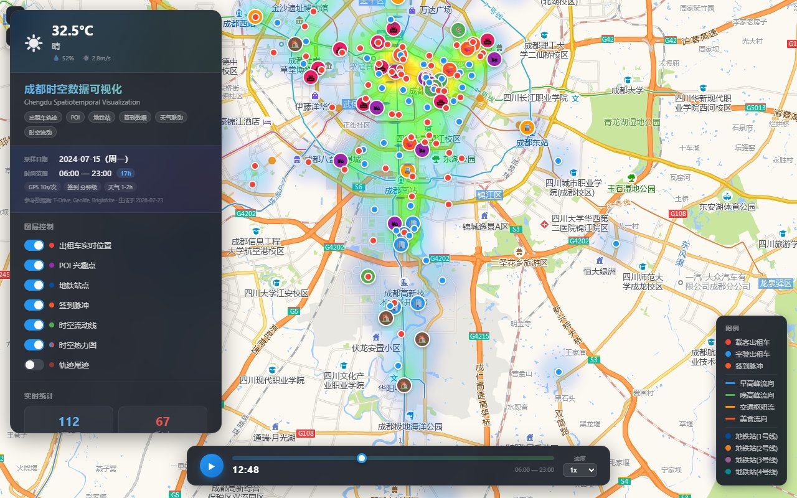
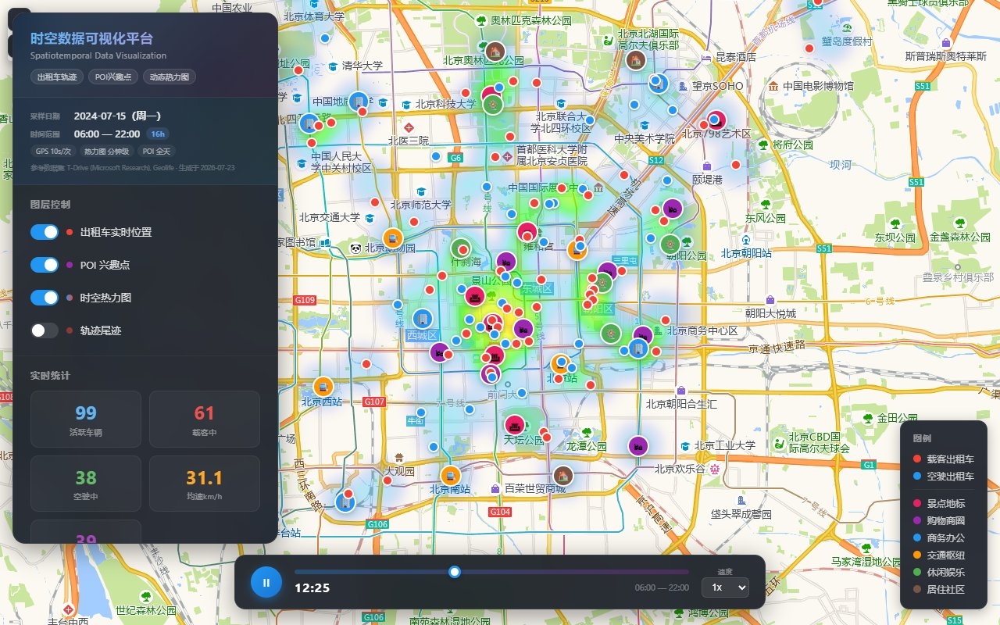

Perception & Modeling
How can agents represent changing spatial relationships and recognize previously unseen events in evolving environments?
Spatio-temporal representations · Dynamic graphs · Relational modeling
Qiang Gao · 高强
时空智能体 · 开放世界学习
I study open-world learning to build spatio-temporal agents that adapt to changing environments, acquire new knowledge, and make reliable decisions.
Two parallel research scenarios: Geospatial Intelligence and Financial Spatial Intelligence.
Professor · Ph.D. Supervisor
Southwestern University of Finance and Economics
01 / Research
How can spatio-temporal agents recognize the unknown, accumulate knowledge, and adapt as relationships, environments, and tasks evolve?
Open-world learning Continuous adaptation across the entire cycle
How can agents represent changing spatial relationships and recognize previously unseen events in evolving environments?
Spatio-temporal representations · Dynamic graphs · Relational modeling
How can agents adapt to distribution shifts and new tasks while retaining useful knowledge over time?
Continual learning · Adaptation · Knowledge transfer · Generalization
How can agents use evolving knowledge and environmental feedback to reason and make decisions under uncertainty?
Spatial reasoning · Decisions under uncertainty · Trustworthy intelligence
Existing foundations. My work spans trajectory understanding, dynamic graph learning, open-world anomaly detection, and continual learning.
Future direction. I aim to connect these foundations in spatio-temporal agents with memory, interaction, and decision-making capabilities, using open-world learning to support long-term adaptation.
Two parallel research scenarios
Spatio-temporal agents and open-world learning connect intelligence in geographic space with intelligence in financial relational space.
Geographic space
地理空间智能
Understanding trajectories, locations, and interactions in evolving geographic environments, and learning as spatial patterns and tasks change.
Trajectory understanding · Spatial relationships · Dynamic environments
Selected geospatial research ↓Financial relational space
金融空间智能
Understanding financial entities and their evolving relationships, and learning to support decisions as market patterns and dependencies change.
Enterprise networks · Market dependencies · Decisions under uncertainty
Selected financial research ↓Shared questions: recognizing the unknown, retaining knowledge, and adapting to change.
02 / Selected publications
Shared learning foundations, with selected work across two parallel scenarios: geospatial intelligence and financial spatial intelligence.
* Corresponding author · # Equal contribution
Recognizing the unknown
OSSL combines a spatio-temporal state-space block with interacting adapters and open-world objectives to classify known trajectory behaviors and discover multiple unknown anomalous patterns.
Transferring knowledge across tasks
DSN combines neuron-level masks with replay generated without past training data, enabling knowledge transfer to new tasks and back to earlier tasks while mitigating forgetting.
Selected work on learning and modeling in changing geographic environments.
Continual spatio-temporal learning
UNOI treats coarse- and fine-grained urban flows as continuous functions and combines neural operators with flow- and task-incremental learning to address scale sensitivity and catastrophic forgetting.
Modeling changing dependencies
ReDyNet responds to changes in metro flow and external factors when constructing dynamic graphs, then uses information-bottleneck-based disentanglement to reduce redundant spatial signals.
Selected work on learning evolving relationships in financial systems under uncertainty.
Relational modeling & uncertainty
RSSL models higher-order stock relationships with a tree structure and attention, then uses a probabilistic Kalman network to track changing stock dynamics with uncertainty estimates.
Risk-aware dependency learning
PDU uses guidance from two environments to progressively model dependencies in historical trading signals while accounting for uncertain risk in stock ranking.

Interactive map of Chengdu with 6 types of spatio-temporal data: taxi trajectories, POIs, metro stations, check-in data, weather dynamics, and flow lines — all animated over time on an AMap base layer.
Illustrative simulation · Generated data inspired by T-Drive, Geolife, and Brightkite patterns; not a replay of original datasets.
Open Demo
Spatio-temporal visualization of Beijing with 130 taxi trajectories (T-Drive pattern), 38 POIs, dynamic heatmaps, and trail effects. Time controller sweeps from 6:00 to 22:00 with playback speed control.
Illustrative simulation · Generated data inspired by T-Drive and Geolife patterns; not a replay of original datasets.
Open Demo04 / About & opportunities
I am a Professor and Ph.D. Supervisor at the School of Computing and Artificial Intelligence, Southwestern University of Finance and Economics (SWUFE), and a member of the Complex Laboratory of New Finance and Economics (NiceLab).
My affiliations also include the Engineering Research Center of Intelligent Finance, Ministry of Education, and the Kash Institute of Electronics and Information Industry.
NiceLab, Jingshi Building · Chengdu, Sichuan, China 611130